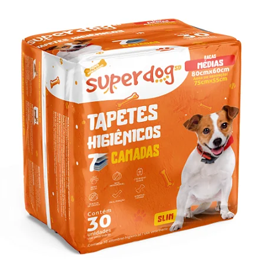
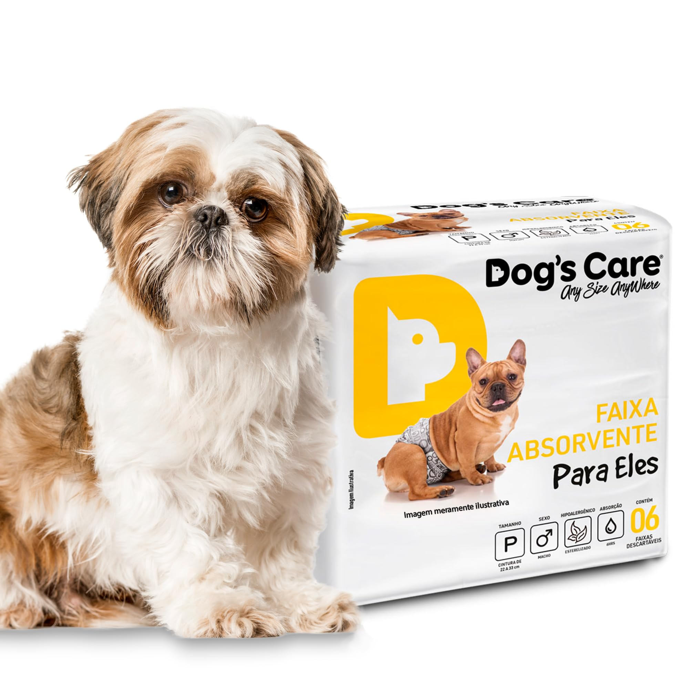

Produtos de Higiene e Limpeza
Mantenha a higiene do seu pet e do ambiente em dia com nossos produtos de higiene e limpeza. Tapetes higiênicos, fraldas descartáveis e muito mais!
| Tapete Higiênico para Cães - 30 unidades | |
|---|---|
|
 |
Descrição: Tapete higiênico super absorvente para cães. Possui 5 camadas de proteção que garantem máxima absorção e evitam vazamentos. Ideal para filhotes em fase de treinamento, cães idosos ou para uso em dias chuvosos. Contém atrativo canino que facilita o aprendizado do pet.
Valor: R$ 39,90 |
| Fralda Descartável para Cães - 12 unidades | |
|---|---|
|
 |
Descrição: Fralda descartável ajustável para cães. Perfeita para fêmeas no cio, cães idosos com incontinência ou pós-operatório. Material macio e hipoalergênico, com fitas adesivas reposicionáveis para ajuste perfeito. Alta capacidade de absorção com indicador de umidade.
Valor: R$ 29,90 |